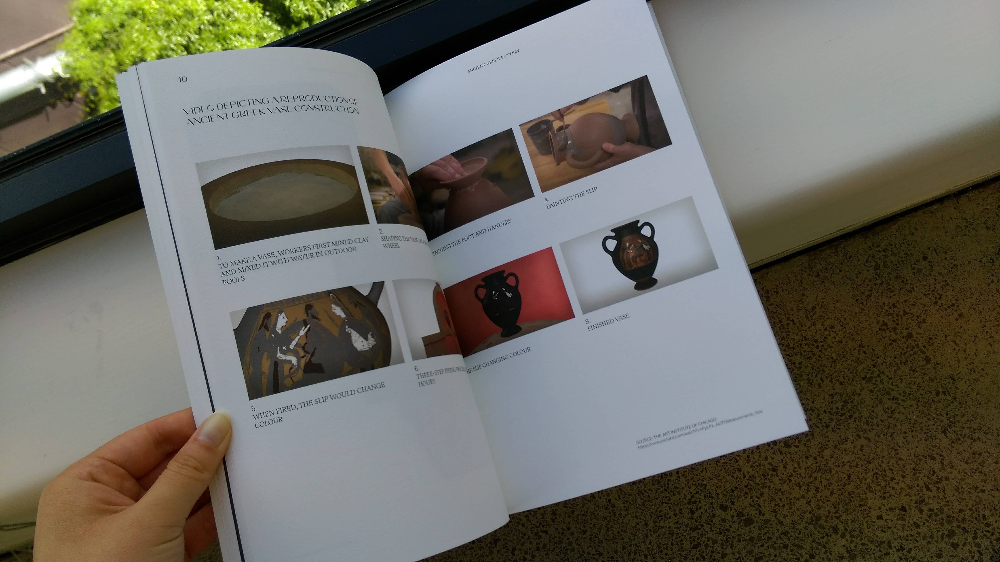
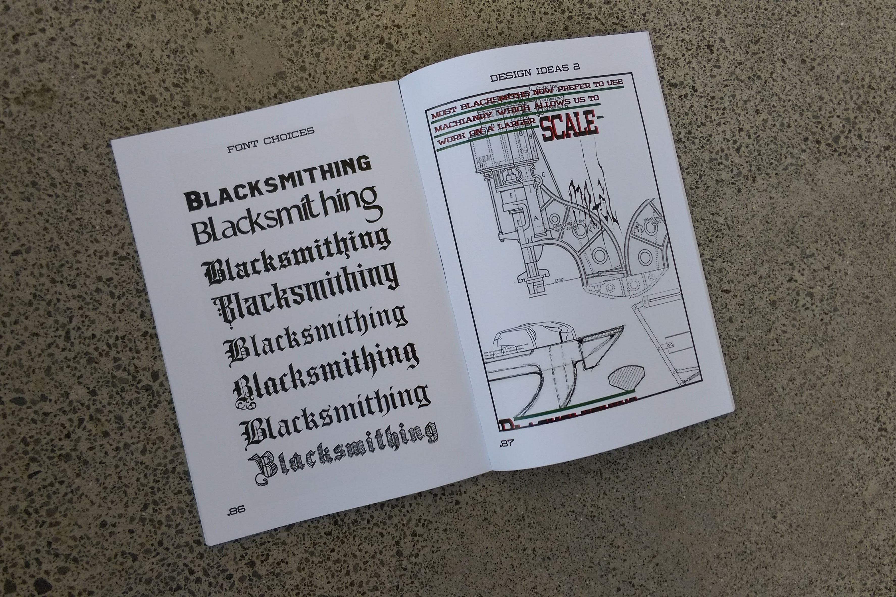
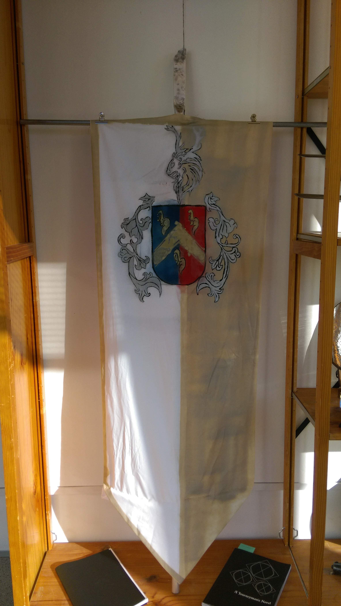

Dhaan Brrar
dhaan.brrarsingh@gmail.com
Contemporary Blacksmithing
210x297mm
Publication; Installation
Blacksmithing as a skill and topic is very broad yet niche. Especially in NZ where materials
such as prime steel, and black iron are uncommon. Many blacksmiths either don’t have access
to the materials or the materials are too expensive. So contemporary blacksmithing in NZ has
taken a unique turn by using scrap materials from basic steel springs all the way to soda cans.
Each piece in this project has been made from scrap materials I could salvage from soda cans
to left of metal sheets. Additionally, why not make a brand for myself, which is why I designed a
coat of arms. An old and unique way of branding one’s family or house. So I figured why not
incorporate it into blacksmithing.